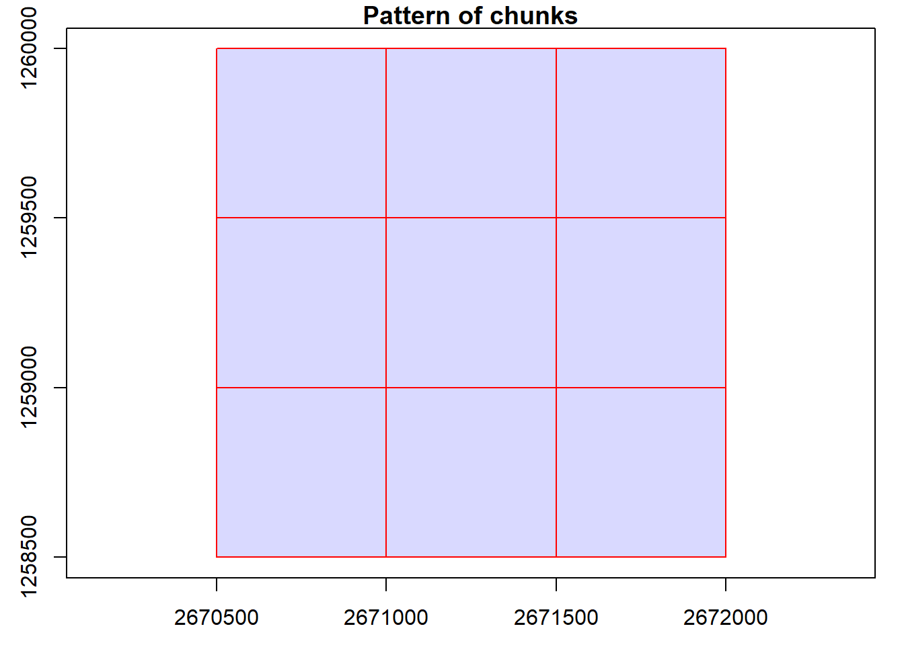

# Clear environment
rm(list = ls(globalenv()))
# Load packages
library(lidR)
library(sf)LAScatalog
Relevant resources:
Overview
This code performs various operations on LiDAR data using LAScatalog functionality. We visualize and inspect the data, validate the files, clip the data based on specific coordinates, generate a Canopy Height Model (CHM), compute above ground biomass, detect treetops, specify processing options, and use parallel computing.
Environment
Basic Usage
In this section, we will cover the basic usage of the lidR package, including reading LiDAR data, visualization, and inspecting metadata.
Read catalog from directory of files
We begin by creating a LAS catalog (ctg) from a folder containing multiple .laz files using the readLAScatalog() function.
# Read catalog and drop withheld
ctg <- readLAScatalog(folder = "data/ctg_norm")Be careful, some tiles seem to overlap each other. lidR may return incorrect outputs with edge artifacts when processing this catalog.Inspect catalog
We can inspect the contents of the catalog using standard R functions.
ctgclass : LAScatalog (v1.1 format 1)
extent : 2670500, 2672000, 1258500, 1260000 (xmin, xmax, ymin, ymax)
coord. ref. : CH1903+ / LV95
area : 2.25 km²
points : 22.51 million points
density : 10 points/m²
density : 4 pulses/m²
num. files : 9 Visualize catalog
We visualize the catalog, showing the spatial coverage of the LiDAR data header extents. The map can be interactive if we use map = TRUE. Try clicking on a tile to see its header information.
plot(ctg)
# Interactive
plot(ctg, map = TRUE)# spatial extent
st_bbox(ctg) xmin ymin xmax ymax
2670500 1258500 2672000 1260000 File indexing
We explore indexing of LAScatalog objects for efficient processing.
Indexing
The lidR policy has always been: use LAStools and lasindex for spatial indexing. If you really don’t want, or can’t use LAStools, then there is a hidden function in lidR that users can use (lidR:::catalog_laxindex()).
# check if files have .lax
is.indexed(ctg)[1] FALSE# generate index files
lidR:::catalog_laxindex(ctg)
Chunk 1 of 9 (11.1%): state ✓
Chunk 2 of 9 (22.2%): state ✓
Chunk 3 of 9 (33.3%): state ✓
Chunk 4 of 9 (44.4%): state ✓
Chunk 5 of 9 (55.6%): state ✓
Chunk 6 of 9 (66.7%): state ✓
Chunk 7 of 9 (77.8%): state ✓
Chunk 8 of 9 (88.9%): state ✓
Chunk 9 of 9 (100%): state ✓# check if files have .lax
is.indexed(ctg)[1] TRUEGenerate CHM
We create a CHM by rasterizing the point cloud data from the catalog.
# Generate CHM
chm <- rasterize_canopy(las = ctg, res = 0.5, algorithm = p2r(subcircle = 0.15))
Chunk 1 of 9 (11.1%): state ✓
Chunk 2 of 9 (22.2%): state ✓
Chunk 3 of 9 (33.3%): state ✓
Chunk 4 of 9 (44.4%): state ✓
Chunk 5 of 9 (55.6%): state ✓
Chunk 6 of 9 (66.7%): state ✓
Chunk 7 of 9 (77.8%): state ✓
Chunk 8 of 9 (88.9%): state ✓
Chunk 9 of 9 (100%): state ✓plot(chm, col = height.colors(50))
We encounter issues and warnings while generating the CHM. Let’s figure out how to fix the warnings and get decent outputs.
# Check for warnings
warnings()Catalog processing options
We explore and manipulate catalog options.
# Setting options and re-rasterizing the CHM
opt_filter(ctg) <- "-drop_z_below 0 -drop_z_above 50"
opt_select(ctg) <- "xyz"
chm <- rasterize_canopy(las = ctg, res = 0.5, algorithm = p2r(subcircle = 0.15))
Chunk 1 of 9 (11.1%): state ✓
Chunk 2 of 9 (22.2%): state ✓
Chunk 3 of 9 (33.3%): state ✓
Chunk 4 of 9 (44.4%): state ✓
Chunk 5 of 9 (55.6%): state ✓
Chunk 6 of 9 (66.7%): state ✓
Chunk 7 of 9 (77.8%): state ✓
Chunk 8 of 9 (88.9%): state ✓
Chunk 9 of 9 (100%): state ✓plot(chm)
Area-based approach on catalog
In this section, we generate Above Ground Biomass (ABA) estimates using the LAScatalog.
Generate ABA output and visualize
We calculate ABA using the pixel_metrics function and visualize the results.
# Generate pixel-based metrics
model <- pixel_metrics(las = ctg, func = ~max(Z), res = 20)
Chunk 1 of 9 (11.1%): state ✓
Chunk 2 of 9 (22.2%): state ✓
Chunk 3 of 9 (33.3%): state ✓
Chunk 4 of 9 (44.4%): state ✓
Chunk 5 of 9 (55.6%): state ✓
Chunk 6 of 9 (66.7%): state ✓
Chunk 7 of 9 (77.8%): state ✓
Chunk 8 of 9 (88.9%): state ✓
Chunk 9 of 9 (100%): state ✓plot(model)
First returns only
We adjust the catalog options to calculate ABA based on first returns only.
opt_filter(ctg) <- "-drop_z_below 0 -drop_z_above 50 -keep_first"
model <- pixel_metrics(las = ctg, func = ~max(Z), res = 20)
Chunk 1 of 9 (11.1%): state ✓
Chunk 2 of 9 (22.2%): state ✓
Chunk 3 of 9 (33.3%): state ✓
Chunk 4 of 9 (44.4%): state ✓
Chunk 5 of 9 (55.6%): state ✓
Chunk 6 of 9 (66.7%): state ✓
Chunk 7 of 9 (77.8%): state ✓
Chunk 8 of 9 (88.9%): state ✓
Chunk 9 of 9 (100%): state ✓plot(model)
Parallel computing
In this section, we explore parallel computing using the lidR package.
Load future library
We load the future library to enable parallel processing.
library(future)Specify catalog options
We specify catalog options for parallel processing.
# Specify options
opt_select(ctg) <- "xyz"
opt_chunk_size(ctg) <- 500
opt_chunk_buffer(ctg) <- 10
# Visualize and summarize the catalog chunks
plot(ctg, chunk = TRUE)
summary(ctg)class : LAScatalog (v1.1 format 1)
extent : 2670500, 2672000, 1258500, 1260000 (xmin, xmax, ymin, ymax)
coord. ref. : CH1903+ / LV95
area : 2.25 km²
points : 22.51 million points
density : 10 points/m²
density : 4 pulses/m²
num. files : 9
proc. opt. : buffer: 10 | chunk: 500
input opt. : select: xyz | filter: -drop_z_below 0 -drop_z_above 50 -keep_first
output opt. : in memory | w2w guaranteed | merging enabled
drivers :
- Raster : format = GTiff NAflag = -999999
- stars : NA_value = -999999
- Spatial : overwrite = FALSE
- SpatRaster : overwrite = FALSE NAflag = -999999
- SpatVector : overwrite = FALSE
- LAS : no parameter
- sf : quiet = TRUE
- data.frame : no parameterSingle core processing
We perform tree detection using a single core.
# Process on single core
future::plan(sequential)
# Detect trees
ttops <- locate_trees(las = ctg, algorithm = lmf(ws = 3, hmin = 5))
Chunk 1 of 9 (11.1%): state ✓
Chunk 2 of 9 (22.2%): state ✓
Chunk 3 of 9 (33.3%): state ✓
Chunk 4 of 9 (44.4%): state ✓
Chunk 5 of 9 (55.6%): state ✓
Chunk 6 of 9 (66.7%): state ✓
Chunk 7 of 9 (77.8%): state ✓
Chunk 8 of 9 (88.9%): state ✓
Chunk 9 of 9 (100%): state ✓Parallel processing
We perform tree detection using multiple cores in parallel.
# Process multi-core with three workers each proccessing a tile
future::plan(multisession, workers = 3L)
# Detect trees
ttops <- locate_trees(las = ctg, algorithm = lmf(ws = 3, hmin = 5))
Chunk 1 of 9 (11.1%): state ✓
Chunk 2 of 9 (22.2%): state ✓
Chunk 3 of 9 (33.3%): state ✓
Chunk 4 of 9 (44.4%): state ✓
Chunk 5 of 9 (55.6%): state ✓
Chunk 6 of 9 (66.7%): state ✓
Chunk 7 of 9 (77.8%): state ✓
Chunk 8 of 9 (88.9%): state ✓
Chunk 9 of 9 (100%): state ✓Revert to single core
We revert to single core processing using future::plan(sequential).
# Back to single core
future::plan(sequential)This concludes the tutorial on basic usage, catalog validation, indexing, CHM generation, ABA estimation, data clipping, ITD using catalog, and parallel computing using the lidR package in R.
Exercises and Questions
Tip
This exercise is complex because it involves options not yet described. Be sure to use the lidRbook and package documentation.
Using:
ctg <- readLAScatalog(folder = "data/Farm_A/")
E1.
Generate a raster of point density for the provided catalog. Hint: Look through the documentation for a function that will do this!
E2.
Modify the catalog to have a point density of 10 pts/m2 using the decimate_points() function. If you get an error make sure to read the documentation for decimate_points() and try: using opt_output_file() to write files to a temporary directory.
E3.
Generate a raster of point density for this new decimated dataset.
E4.
Read the whole decimated catalog as a single las file. The catalog isn’t very big - not recommended for larger datasets!
E5.
Read documentation for the catalog_retile() function and merge the decimated catalog into larger tiles.